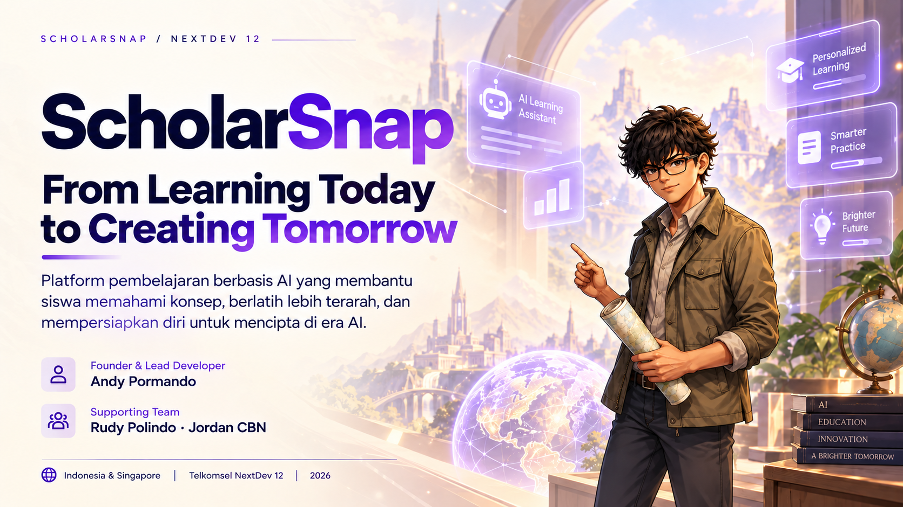
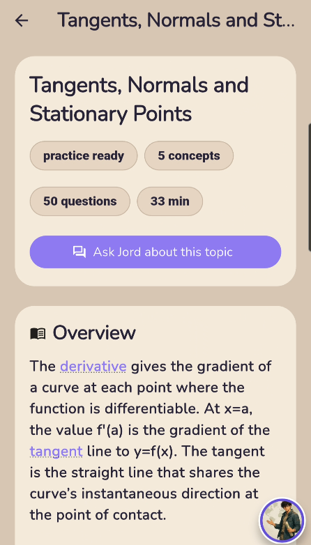
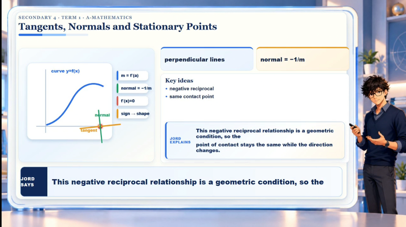
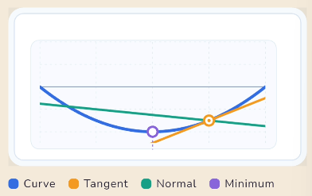
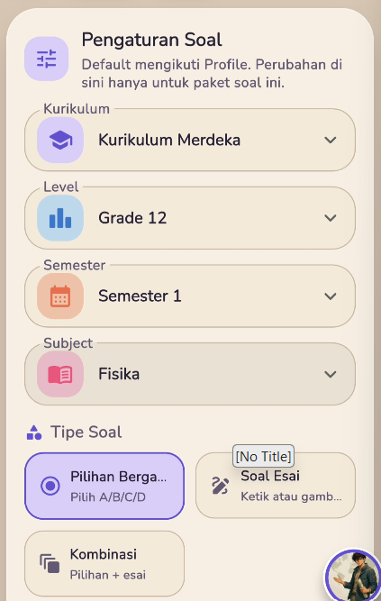
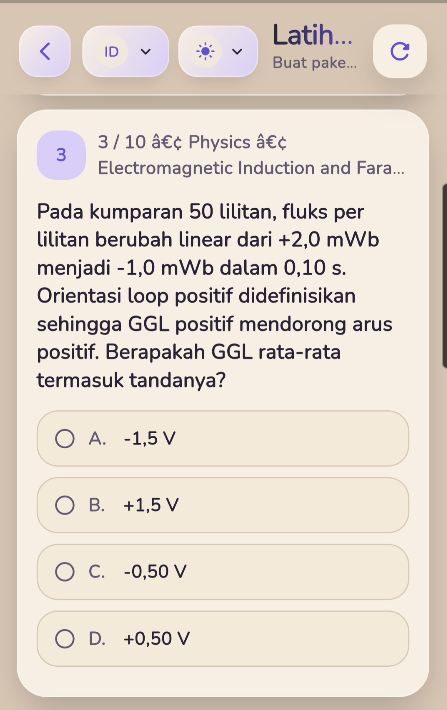
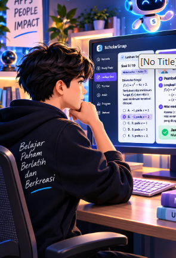
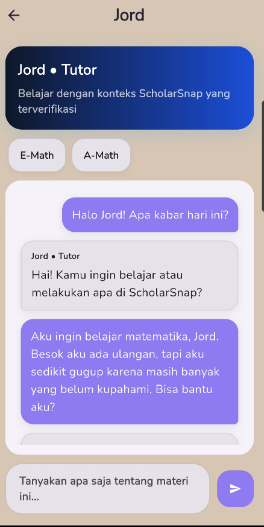
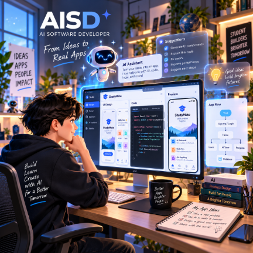

01 / AKSES
Pengajaran berkualitas
Akses dan kualitas pengajaran tidak selalu merata antarwilayah dan kondisi pelajar.
ScholarSnap menghubungkan materi, latihan, evaluasi, serta pendampingan AI dalam satu perjalanan belajar—dari memahami konsep hingga berani menciptakan solusi.
From Learning Today to Creating Tomorrow
Produk sedang dalam pengembangan, pengujian, dan validasi. Belum diluncurkan untuk publik.

Belajar terarah bersama Jord dan LouisaFondasi konten akademik
Ringkasan konten akademik berdasarkan snapshot katalog 17 Oktober 2026; bukan jumlah pengguna atau hasil pembelajaran.
The education dilemma
AI mengubah cara belajar dan bekerja. Siswa tetap membutuhkan fondasi pengetahuan yang kuat, dukungan saat belajar mandiri, dan pengalaman yang mampu menyesuaikan kebutuhan mereka.
Akses dan kualitas pengajaran tidak selalu merata antarwilayah dan kondisi pelajar.
Siswa perlu arahan tentang dari mana mulai, apa yang perlu dipelajari, dan kapan berlatih.
Penjelasan, ritme, dan latihan perlu membantu siswa belajar sesuai konteks dan kebutuhannya.
Pendamping belajar
Tutor akademik dan teman belajar yang saling melengkapi sepanjang perjalanan belajar.
Membimbing siswa memahami konsep, menjawab pertanyaan pelajaran, dan mengarahkan latihan hingga lebih paham.
Menemani proses belajar, mendukung motivasi, dan membantu siswa menikmati perjalanan belajar. Pertanyaan akademik diarahkan ke Jord.
Rencana pilihan AI Companion tambahan dan belajar bersama teman belum diluncurkan.
Fondasi akademik
Jelajahi empat pengalaman utama ScholarSnap: Materi Topik Belajar, Latihan Soal, Try-Out, dan AI Software Developer.
Alur topik membantu siswa mengikuti materi secara bertahap dan meminta bantuan Jord jika ada konsep yang belum jelas.



Materi, ilustrasi, dan video tutorial membantu siswa memahami konsep langkah demi langkah.
Contoh Study Topic
Lihat bagaimana konsep Kimia diperkenalkan melalui ringkasan materi, ilustrasi, dan video tutorial berbahasa Inggris.
Overview: Siswa mempelajari sifat asam dan alkali, penggunaan indikator, skala pH, pembentukan garam, dan reaksi netralisasi melalui materi bertahap yang bisa dibahas bersama Jord.
Visual ringkas untuk membantu menjelaskan hubungan antara acid, alkali, indikator, pH, dan hasil neutralisation.
Ilustrasi membantu menggambarkan konsep asam, alkali, indikator, dan reaksi netralisasi.
Contoh Video Tutorial ScholarSnap
Dua contoh tutorial dari katalog asli ScholarSnap: Chemistry dan Additional Mathematics untuk Singapore Secondary 4. Kedua video dapat diputar langsung melalui pemutar atau tautan MP4 pada setiap kartu.
Setiap video demo merupakan kompilasi 10 adegan pembelajaran asli yang telah diverifikasi, tanpa segmen kuis serta jawaban bercabang. Ketersediaan video dalam aplikasi tetap mengikuti tahapan pengujian.



Dari memilih latihan hingga meninjau pembahasan, setiap langkah dirancang untuk mendukung belajar terarah.
Latihan disusun menurut kurikulum, jenjang, mata pelajaran, dan topik. Hasil latihan membantu siswa melihat bagian yang perlu dipahami kembali.
03 / Try-Out
Pilih negara dan jenis ujian, kemudian kerjakan latihan atau simulasi menurut mode yang tersedia.
*Tes Beasiswa Indonesia masih dikembangkan. Soal latihan bukan soal resmi penyelenggara; jenis mode dan timer mengikuti template.
AI Tutor Jord
Jord dirancang untuk mengutamakan rujukan ScholarSnap dan mengikuti batasan izin serta pengujian kualitas sebelum menggunakan layanan AI tambahan bila diperlukan.
Meminta penjelasan atau bantuan memahami materi.
Memahami topik, bahasa, dan konteks yang diizinkan.
Menggunakan materi dan bank soal ScholarSnap yang relevan.
Memberikan penjelasan dan langkah belajar berikutnya.

04 / AI Software Developer
AISD dirancang agar pelajar dapat mengubah ide menjadi aplikasi, sambil memahami alur desain, logika, coding, debugging, dan testing bersama AI.
Status: konsep dan prototipe telah diuji secara lokal; integrasi untuk learner dan peluncuran produksi masih dalam proses validasi.

Ilustrasi alur belajar membuat aplikasi bersama AI
Judul atau contoh proyek software
Tentukan tujuan, fitur, dan alur
Buat kode awal dan pelajari struktur
Temukan masalah, perbaiki, uji ulang
Uji hasil dan lanjutkan pengembangan
Fitur AISD dikembangkan bertahap dengan sandbox dan quality gate. Bukan layanan produksi yang sudah tersedia publik.
Visi dampak sosial
ScholarSnap ingin mendukung siswa dari berbagai daerah untuk belajar lebih terarah, berani mencoba, dan memahami kemajuannya sendiri.
Ketiganya adalah target yang perlu diuji melalui pilot, bukan hasil dampak yang sudah terbukti.
NextDev 12 · Rencana sinergi
ScholarSnap membuka peluang kolaborasi untuk mendukung pembelajaran siswa di Indonesia dan Singapura.
Pre-launch / Product Testing. Platform dalam pengembangan bertahap, dengan fokus pada mutu materi, keamanan pengalaman AI, serta kesiapan pilot.
Eksplorasi distribusi dan pilot bersama komunitas atau sekolah untuk mengukur manfaat belajar.
Eksplorasi validasi konten, kualitas tutor AI, dan adaptasi bahasa untuk kebutuhan pelajar.
Usulan kolaborasi ini masih berupa rencana; belum merupakan kerja sama resmi dengan Telkomsel atau Singtel.
ScholarSnap
Belajar bukan sekadar memperoleh jawaban yang benar. Tujuannya adalah memahami, percaya diri, dan menggunakan pengetahuan untuk menciptakan solusi.
Jelajahi pengalaman produk ↗Kembali ke atas ↑